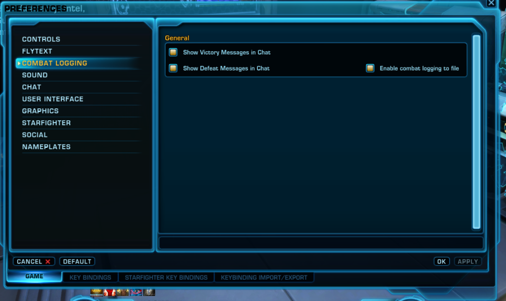

Follow the steps below to turn on combat logging in Star Wars: The Old Republic and see your live DPS, HPS, APM, and raid performance in real time.

Combat Logging -> Enable combat logging to file" />Once enabled, SWTOR automatically writes timestamped text files (combat_YYYY-MM-DD_HH_MM_SS_######.txt) into your Windows Documents folder:
Using Windows OneDrive? If your Documents folder is backed up by OneDrive, Windows stores the files at:
Automatic Detection: SWTOR_DPS_Parser.exe automatically checks both locations and watches whichever folder contains your newest combat_*.txt files. You can also click ❓ Help → 📂 Change Folder inside the overlay at any time to pick a custom directory.
Keeps the DPS window floating above SWTOR while you play. Click to toggle on or off.
Collapses the window into a compact horizontal stat bar showing only your key numbers during boss pulls.
Streams a simulated boss fight so you can test the overlay and layout even when SWTOR is closed.
Use the dropdown menu above the tabs to inspect any previous boss pull or trash fight from your current log file.